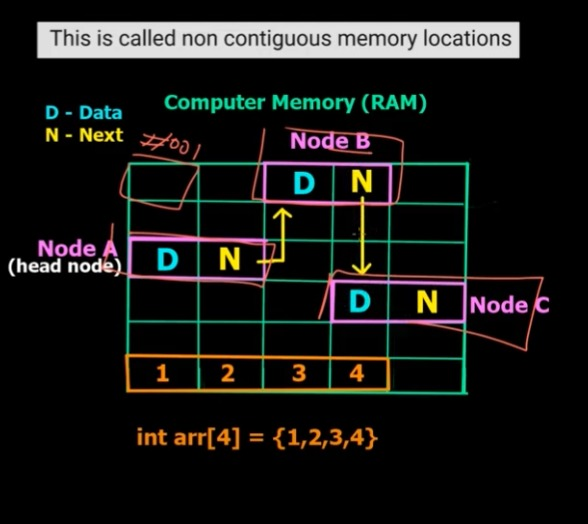

Linked List vs Arrays
Advantages of Linked List over Arrays
1) Dynamic Size
2) Ease of Insertion/Deletion
Disadvantages of Linked List over Arrays
1) Random access is not allowed. We have to access elements sequentially starting from the first node.
2) Extra memory space for a pointer is required with each element of the list.
3) Not cache friendly.
Since array elements are contiguous locations,
there is locality of reference which is not there in case of linked lists.
